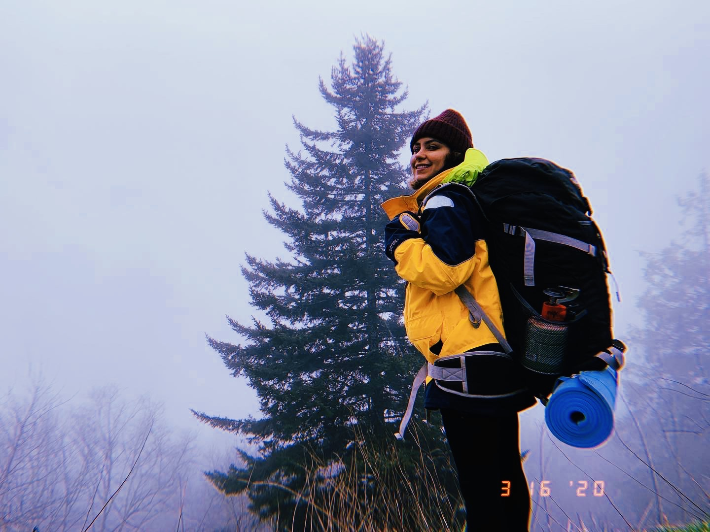
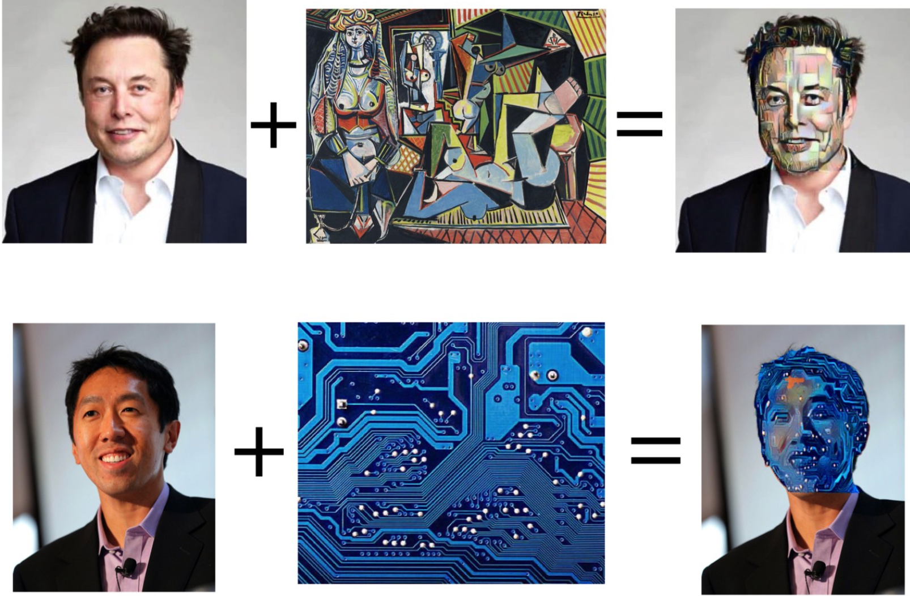
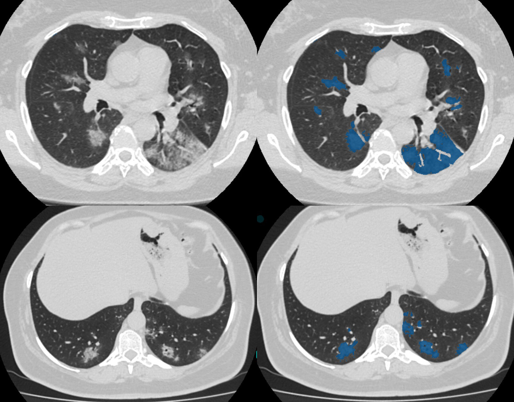
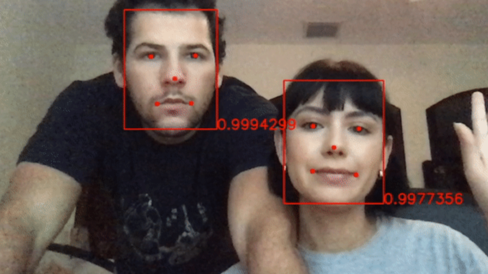
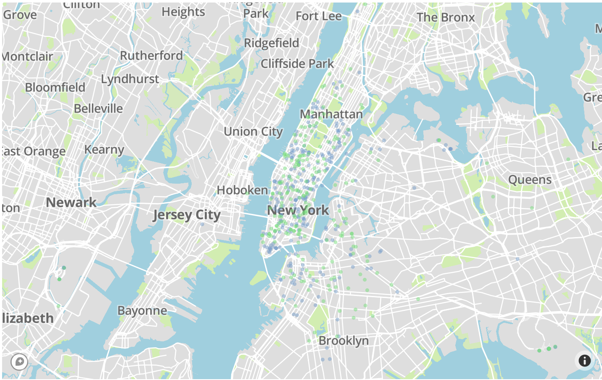
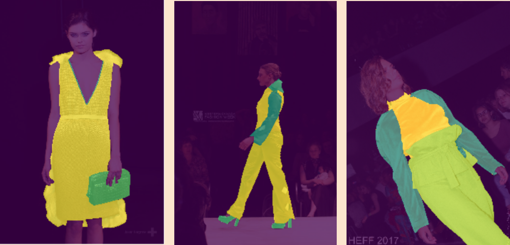
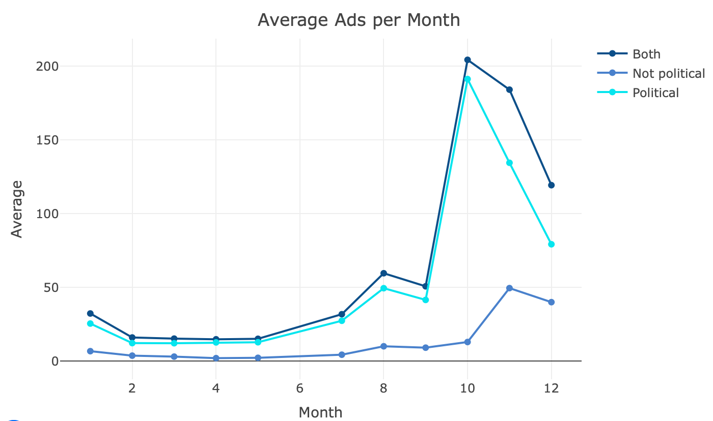

I'm a data scientist interested in the intersection between business and technology.
Skilled in Python, Object oriented programming, Numpy, R, OpenCV, PIL, Pytorch, PySpark, matplotlib, and developing dashboard applications. I have done projects on data analysis including statistical models, machine learning algorithms and deep learning networks. I am particularly interested in Computer Vision and AI solutions.
I have experience working with many different computer vision networks including classification, instance segmentation, semantic segmentation, object detection and face detection. I also have experience with image processing techniques that are often required when working with deep learning models.
Currently pursuing a Master of Science in Data Science at New College of Florida.


Constructed an application capable of running style transfer exclusively on a face recognized in a picture leaving surroundings untouched.
Created a conted-based recommendation system for skincare products based on ingredients. Processed the ingredient list via word-embedding and used t-SNE, an unsupervised machine learning method to find similarity between products

Implemented and trained an object detection network using YOLOv3 framework to detect personal protective equipment and fire in construction sites for the purpose of monitoring security

The goal of this project is to take three-dimensional CT scans of human torsos to detect the location of suspected malignant tumors, if any exist within the lungs.

Developed a face detection application from scratch leveraging OpenCV and MTCNN able to operate through a webcam in real time. Incorporated
a CNN classifier to recognize and blur my face.

Analyzed an Uber dataset using PySpark, Python and R to gain understanding of Uber Pickup locations in NYC and compared to Taxi data

Developed and trained an instance segmentation convolutional neural network from a clothing dataset to segment and recognize clothing pieces

Analyzed the content of the Ads with the use of the NLTK package and performed sentiment analysis. Developed a K-means clustering model to group similar Ads together in order to find patterns in the data.